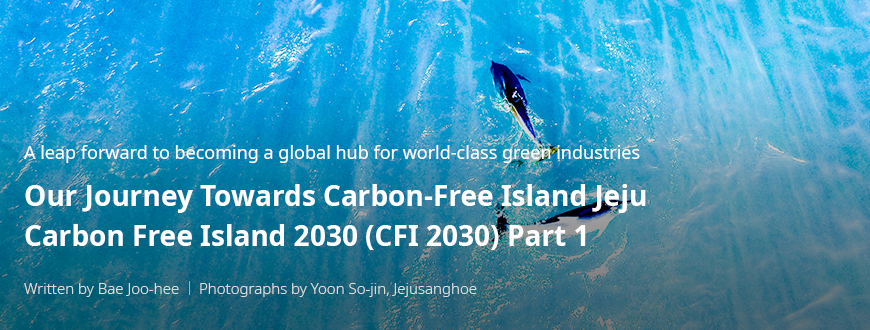
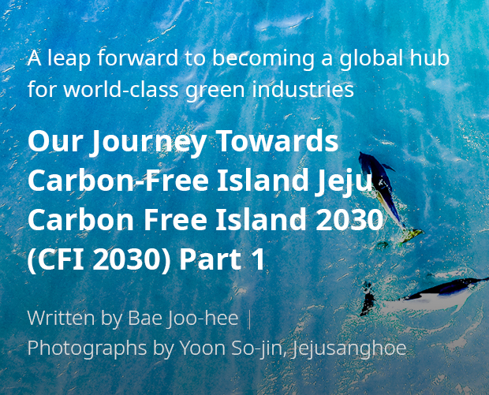
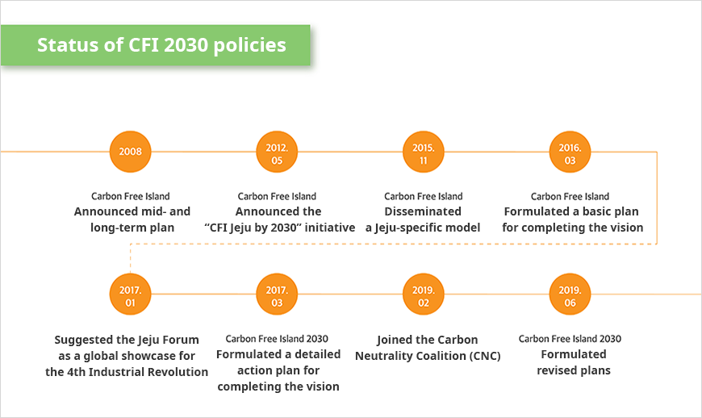
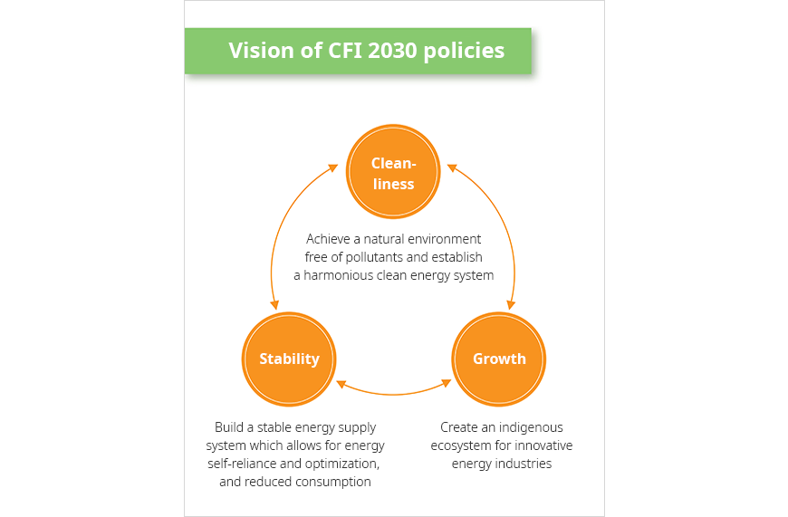
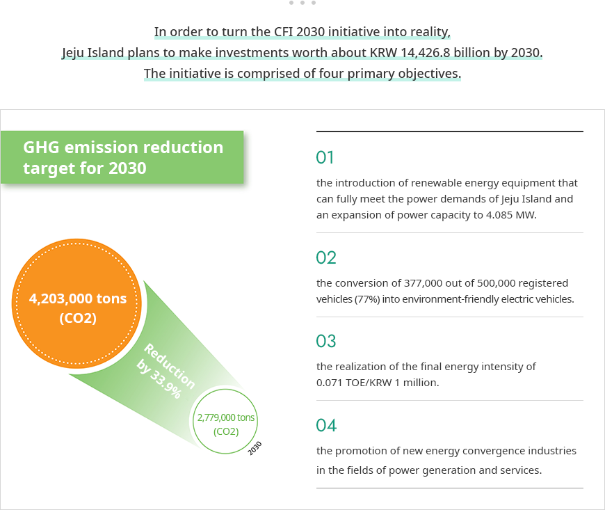

기획취재콘텐츠
- Home
- 제주라이프
- 기획취재콘텐츠
CFI 2030(Carbon Free Island 2030) Part 1새로운 글


Industrialization has made the lives of human beings more prosperous, but along with it has come environmental degradation and the depletion of resources. Whenever natural disasters driven by extreme weather have occurred, people have said that the Earth was sick. This is proof of the recognition among some people of the severity of the situation and the necessity for countermeasures. Economic growth driven by indiscriminate development is no longer considered a virtue, while two key words—sustainability and coexistence—have become the foundation for advancement.
Since the agreement on the Climate Change Convention was finally reached at the Rio de Janeiro Earth Summit in 1992, the global initiative for reducing greenhouse gas emissions has been put into action. In 2020, the Paris Agreement, adopted in December 2015, enters into full force and 195 countries, including South Korea, will be obliged to reduce their GHG emissions. In line with the global trend of the new climate regime, Jeju Island has aggressively pushed ahead with the Jeju Carbon-Free Island 2030 (hereinafter referred to as “CFI 2030”) initiative. This is part of the island’s bold and preemptive set of measures for shifting towards an eco-friendly industrial structure as required by the era of climate change, while at the same time for securing stable growth and emerging as a global hub driving green industries.
CFI 2030, Jeju’s preemptive approach to a carbon-free island
The beginning of the CFI 2030 initiative dates back to 2008. At the time, during which global oil prices had reached over $100 a barrel, Jeju Island announced a mid- and long-term plan titled “Carbon-Free Island” aimed at reducing greenhouse gas emissions and achieving energy self-reliance by promoting its unique energy conservation policy and using the island’s own renewable energy sources. In May 2012, the plan drew global attention after it was further refined and announced as a comprehensive low-carbon, green-growth model and named the “Carbon-Free Island Jeju by 2030” initiative. It has since become one of the island’s most fundamental policies.


Status of CFI 2030 policies
- 2008-Carbon Free Island Announced mid- and long-term plan
- 2012.05-Carbon Free Island Announced the “CFI Jeju by 2030” initiative
- 2015.11-Carbon Free Island Disseminated a Jeju-specific model
- 2016.03-Carbon Free Island Formulated a basic plan for completing the vision
- 2017.01-Suggested the Jeju Forum as a global showcase for the 4th Industrial Revolution
- 2017.03-Carbon Free Island 2030 Formulated a detailed action plan for completing the vision
- 2019.02-Joined the Carbon Neutrality Coalition (CNC)
- 2019.02-Carbon Free Island 2030 Formulated revised plans

The CFI 2030 vision consists of three key words: cleanliness, stability, and growth. The vision is to achieve a natural environment free of pollutants and establish a harmonious clean energy system; to build a stable energy supply system which allows for energy self-reliance and optimization, and reduced consumption; and to create an indigenous ecosystem for innovative energy industries. This illustrates the island’s commitment to securing energy stability and self-reliance as well as to joining international efforts towards adopting the new climate regime, which will help create and nurture an industrial ecosystem beneficial for Jeju residents and strengthen its unique energy industrial structure.

- Cleanliness - Achieve a natural environment free of pollutants and establish a harmonious clean energy system
- Growth - Create an indigenous ecosystem for innovative energy industries
- Stability - Build a stable energy supply system which allows for energy self-reliance and optimization, and reduced consumption


In order to turn the CFI 2030 initiative into reality, Jeju Island plans to make investments worth about KRW 14,426.8 billion by 2030.
GHG emission reduction target for 2030 - 4,203,000 tons (CO2) Co2 → 2,779,000 tons (CO2) (Reduction by 33.9%)
- The initiative is comprised of four primary objectives. The first of these is the introduction of renewable energy equipment that can fully meet the power demands of Jeju Island and an expansion of power capacity to 4.085 MW.
- The second is the conversion of 377,000 out of 500,000 registered vehicles (77%) into environment-friendly electric vehicles.
- The third objective is the realization of the final energy intensity of 0.071 TOE/KRW 1 million.
- The final objective is the promotion of new energy convergence industries in the fields of power generation and services.

The four above-mentioned objectives converge in the two industrial pillars for turning the CFI 2030 initiative into reality: electric vehicles (EV) and renewable energy.
이전글
이전글이 없습니다.